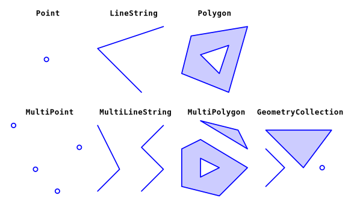

| Type | Description | # of Dimension |
|---|---|---|
POINT |
zero-dimensional geometry containing a single point | 0 |
LINESTRING |
sequence of points connected by straight1 line pieces | 1 |
POLYGON |
sequence of points form a closed2 ring3 | 2 |
MULTIPOINT |
set of points | 0 |
MULTILINESTRING |
set of linestrings | 1 |
MULTIPOLYGON |
set of polygons | 2 |
GEOMETRYCOLLECTION |
set of geometries of any of the above types | NA |
Simple Features
Simple feature standard
- Simple features is an open standard (ISO 19125-1:2004) developed and endorsed by the Open Geospatial Consortium (OGC)
- The standard is widely implemented in spatial databases (such as PostGIS), desktop GIS (such as ArcGIS, QGIS), scripting languages (such as R, Python) and forms the vector data basis for libraries such as GDAL.
What is a feature?
The standard says:
A simple feature is defined […] to have both spatial and non-spatial attributes. Spatial attributes are geometry valued, and simple features are based on 2D geometry with linear interpolation between vertices.
- A feature is thought of as a thing / an object in the real world, such as a building or a tree.
- Features have:
- a geometry describing where on Earth the feature is located
- attributes, which describe other properties.
- For example:
- The geometry of a tree can be the delineation of its crown, of its stem, or the point indicating its center
- attributes (properties) may include its height, color, diameter at breast height at a particular date, and so on
Simple Feature Model
- Simple features is a hierarchical data model that represents a wide range of geometry types.
- All geometries are composed of points in a 2-, 3- or 4-dimensional space
- Of 18 geometry types supported by the specification, only the following seven (see Figure 1.1 and Table 1.1) are used in the vast majority of geographic research:
- Three basic types: points, linestrings, polygons
- Three composite types: mutlipoints, multilinestrings, multipolygons
- One special case: geometrycollection (which can be a conglomarate of all the afore mentioned)
- These seven core geometry types are fully supported by the R package sf (Pebesma 2018)

Simple features in R
Simple Features in R is modelled in three levels:
- Simple feature geometries (
sfg): Individual Simple Feature objects - Simple Feature geometry columns (
sfc): A list column ofsfgs - Simple Features (with attributes): A
sfcwith attributes, i.e. additional columns
sfg: simple feature geometry
- Simple feature geometries are implemented as R native data, using the following rules:
- a single POINT is a numeric vector
- a set of points, e.g. in a LINESTRING or ring of a POLYGON is a matrix, each row containing a point
- any other set is a
list
Points
# creator functions are rarely used in practice, since we typically bulk
# read and write spatial data. They are useful for illustration)
library(sf)
fracht <- st_point(c(2685374, 1256519))
frachtplot(fracht)
Linestrings
coords <- c(
2684336, 1255553,
2682705, 1258929
) |>
matrix(ncol = 2, byrow = TRUE)
coords [,1] [,2]
[1,] 2684336 1255553
[2,] 2682705 1258929piste <- st_linestring(coords)
pisteplot(piste)
Polygons
coords_2 <- c(
2684142, 1255702, # ↰
2685600, 1256958, # start and end must
2682534, 1259699, # be identical (closed)
2684142, 1255702 # ↲
) |>
matrix(ncol = 2, byrow = TRUE) |>
list()
coords_2[[1]]
[,1] [,2]
[1,] 2684142 1255702
[2,] 2685600 1256958
[3,] 2682534 1259699
[4,] 2684142 1255702flughafen <- st_polygon(coords_2)
flughafenplot(flughafen)
sfc: Simple feature geometry columns
- Usually, a
sfccontains more than onesfg. - This is not mandatory, and for convenience we will just use a single
sfgto showcasesfc - As you might have noticed, we didn’t specify a CRS when creating the
sfgobjects. This is because we weren’t able to. Withsfc, we can (and should) specify a crs.
fracht_sfc <- st_sfc(fracht, crs = 2056)
fracht_sfcGeometry set for 1 feature
Geometry type: POINT
Dimension: XY
Bounding box: xmin: 2685374 ymin: 1256519 xmax: 2685374 ymax: 1256519
Projected CRS: CH1903+ / LV95piste_sfc <- st_sfc(piste, crs = 2056)
piste_sfcGeometry set for 1 feature
Geometry type: LINESTRING
Dimension: XY
Bounding box: xmin: 2682705 ymin: 1255553 xmax: 2684336 ymax: 1258929
Projected CRS: CH1903+ / LV95flughafen_sfc <- st_sfc(flughafen, crs = 2056)
flughafen_sfcGeometry set for 1 feature
Geometry type: POLYGON
Dimension: XY
Bounding box: xmin: 2682534 ymin: 1255702 xmax: 2685600 ymax: 1259699
Projected CRS: CH1903+ / LV95sf: Simple features
- Simple features have attributes
- In order to add attributes to a simple feature column (
sfc), we need to convert it to a simple feature (sf)
fracht_sf <- st_as_sf(fracht_sfc)
fracht_sf$name <- "Ost"- A
sfobject is a subset of a data.frame. Many (all?) things which can be done with a data.frame, can be done with ansfobject - Many
tidyversefunctions are implemented to nicely work withsf
# sf objects are also dataframes
is.data.frame(fracht_sf)[1] TRUE- Geometries are sticky. This means they aren’t dropped implicitly
# Geometries are sticky
fracht_sf[, "name"] Simple feature collection with 1 feature and 1 field
Geometry type: POINT
Dimension: XY
Bounding box: xmin: 2685374 ymin: 1256519 xmax: 2685374 ymax: 1256519
Projected CRS: CH1903+ / LV95
name x
1 Ost POINT (2685374 1256519)piste_sf <- st_as_sf(piste_sfc)
piste_sf$nr <- 34
flughafen_sf <- st_as_sf(flughafen_sfc)
flughafen_sf$name <- "Flughafen Zürich"Plotting simple features
- Various libraries support plotting
sfobjects:- base R (sf provides a
plot-method) - General purpose libraries such as
ggplot2 - Dedicated geospatial plotting libraries such as
tmap
- base R (sf provides a
- Use:
- base R: If you want to take a quick look at your data. Base R has the most compact syntax and is extremely fast in plotting
ggplot2: If you only have (small-ish) vector data (no raster) and/or want to leverage the power ofggplot2tmap: If you want to use all features a dedicated library for geospatial data has to offer: North arrow, scale bar, interactive (web) maps
# Using base R
plot(st_geometry(flughafen_sf))
plot(piste_sf, add = TRUE)
plot(fracht_sf, add = TRUE)
##########################################################
# Using ggplot2
library(ggplot2)
ggplot() +
geom_sf(data = flughafen_sf) +
geom_sf(data = piste_sf) +
geom_sf(data = fracht_sf)
##########################################################
# Using tmap
library(tmap)
tm_shape(flughafen_sf) + tm_polygons() +
tm_shape(piste_sf) + tm_lines() +
tm_shape(fracht_sf) + tm_dots()

ggplot2

tmap
- The
tmaplibrary can render the map either in a static plot shown before or as an interactive web map (see below)
# set tmap_mode to "view" for an interactive web map
tmap_mode("view")
tm_shape(flughafen_sf) + tm_polygons() +
tm_shape(piste_sf) + tm_lines() +
tm_shape(fracht_sf) + tm_dots()🪕 Tasks
- Create some simple feature geometries (
sfg) of objects you know “by hand”. Create at least onePOINT, oneLINESTRINGand onePOLYGONgeometry. You can capture the coordinates of the nodes from map.geo.admin.ch if these are is Switzerland and openstreetmap.org (or similar) if they aren’t - Create simple feature columns from you
sfgs. Make sure that you assign the correct CRS - Create simple features (
sf) from yoursfcs and add some attributes
References
Dorman, Michael. 2023. “Spatial Data Programming with Python — Geobgu.xyz.” https://geobgu.xyz/py/.
Pebesma, Edzer. 2018. “Simple Features for R: Standardized Support for Spatial Vector Data.” The R Journal 10 (1): 439–46. https://doi.org/10.32614/RJ-2018-009.